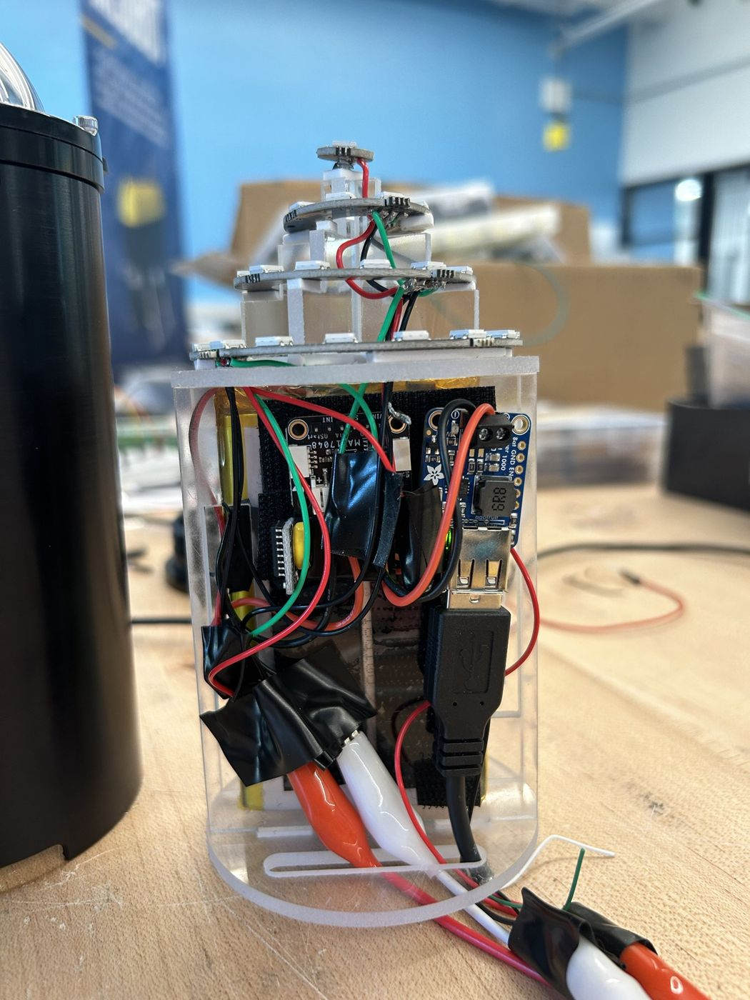
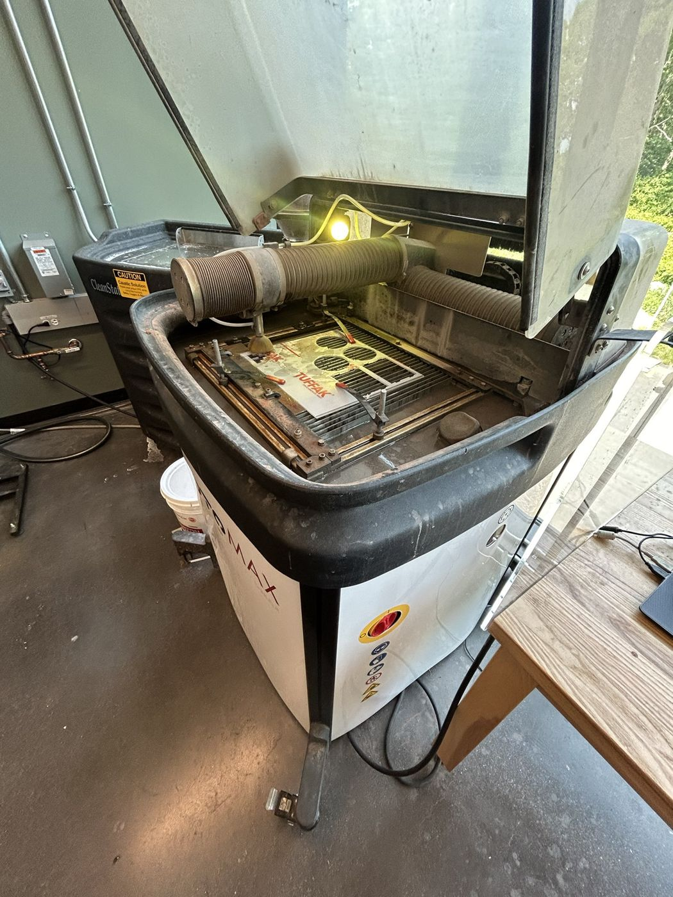
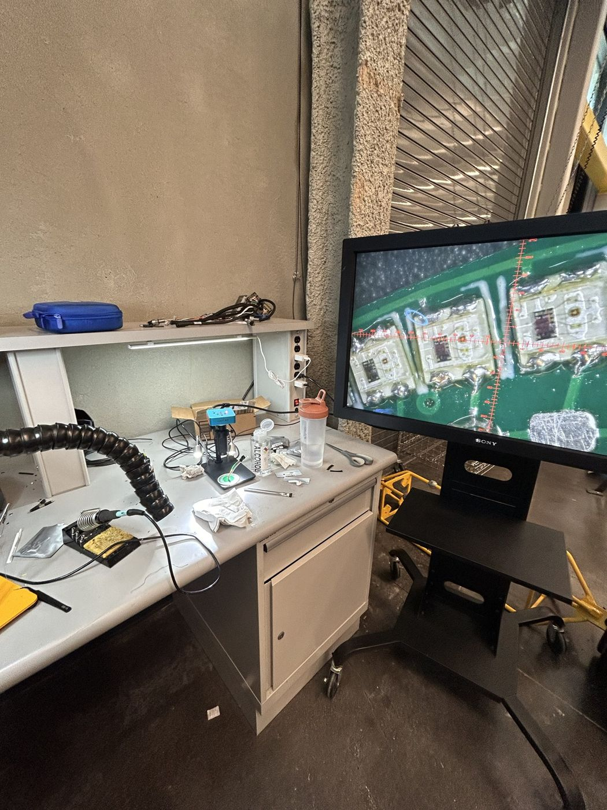
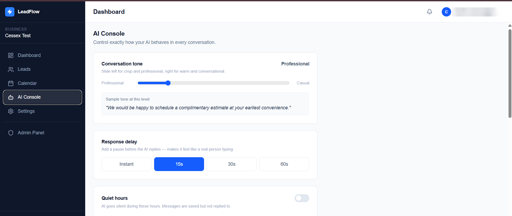

Optical lure
Woods Hole Oceanographic InstitutionAn underwater light lure that mimics the bioluminescent flashes of midwater animals, built for ocean research.
I prototyped and developed the electronics and firmware, from the tiered LED rings to scheduled light programs. It's been through extensive live testing and is fully operational.
The firmware runs twelve light patterns (pulse, twinkle, spiral, pinwheel, escape and more) on non-blocking timers, so the clock, logging and LEDs all update together, and it switches patterns by time of day for each deployment.
- Controller
- Arduino Nano 33 IoT
- Light
- 37 NeoPixel LEDs in tiered rings
- Timing
- DS3231 clock over I2C, network time sync
- Data
- Timestamped SD card logging
- Power
- LiPo, boost converter, fuel gauge
- Updates
- Over-the-air firmware


71-LED ring board
Custom PCB in KiCadA 2.5 inch round board with 71 tiny addressable LEDs around its edge, for a brighter, denser light ring.
Each LED has its own decoupling capacitor beside it, and the chain runs from one four-pin connector in the center. The 2 mm LEDs were hand-soldered and inspected under magnification before power-up.
- Board
- 63.5 mm round
- LEDs
- 71 × WS2812B-2020
- Decoupling
- 71 × 0805 ceramic capacitors
- Assembly
- Hand-soldered SMD

LeadFlow
Full-stack project
An automated lead response system for home service businesses.
When a new customer texts in, it replies almost instantly, asks the right follow-up questions, grades the lead with a short summary, and sends a booking link, so the owner never loses a job to a slow reply.
Built with